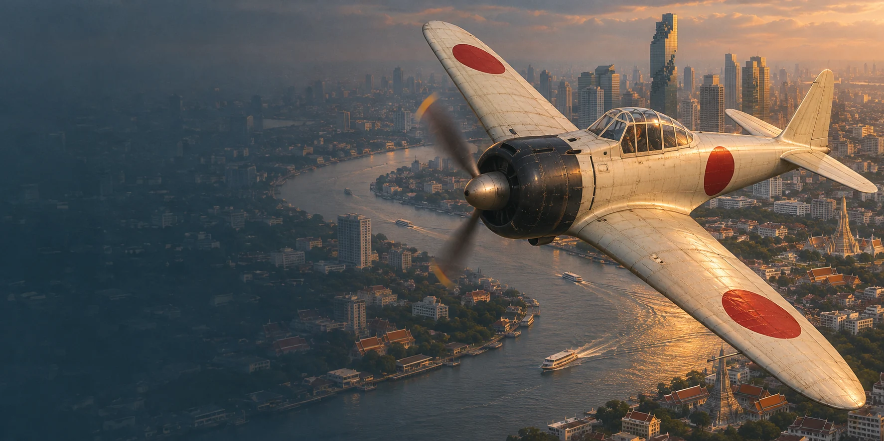
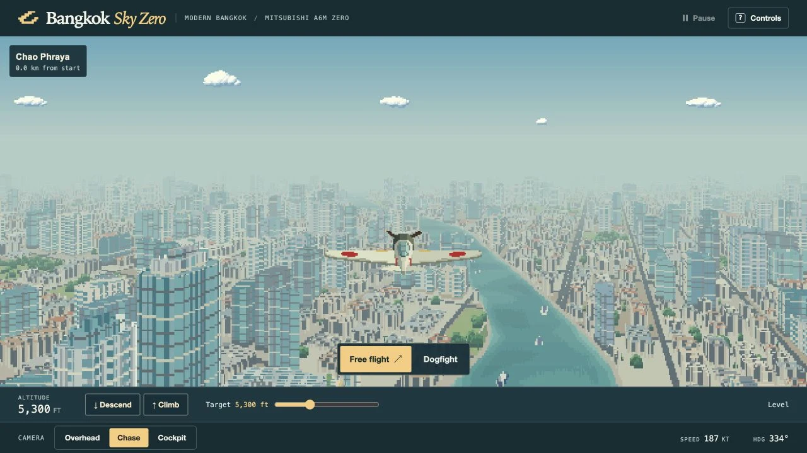

Bangkok Sky Zero
Take a classic Japanese fighter over modern Bangkok in a pixel-art flight game. Follow the river at your own pace or intercept an enemy aircraft.
- Aircraft
- Mitsubishi A6M Zero
- Departure
- Chao Phraya, Bangkok
- Flight envelope
- 200–16,000 ft
- Camera views
- Overhead · Chase · Cockpit
The river approach
Lift off over the Chao Phraya, with ICONSIAM on the west bank and the towers of Bang Rak to the east. Stay low to trace the river bends, or climb and head south for the Gulf of Thailand.

Flight manual
Keyboard & mouse
- Steer
- Move pointer or ← →
- Climb / descend
- ↑ ↓ or W S
- Full throttle
- Hold Shift
- Barrel roll
- R
- Fire in dogfight
- Hold click or F
- Switch camera
- Space
Touchscreen
- Steer
- Drag across the sky
- Climb / descend
- Tap or hold Climb / Descend
- Full throttle
- Hold Power
- Barrel roll
- Tap Roll
- Fire in dogfight
- Hold Fire
- Switch camera
- Tap a camera below the view
For longer trips in free flight, tap 4× time beside the distance readout.